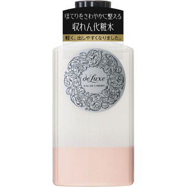

返回列表
产品名称：ドルックス オードカルマンN

資生堂 ドルックス オードカルマンN ＿
メーカー 資生堂
JANコード 4901872241279
商品の特徴
肌のほてりをすこやかに整える収れん化粧水
さわやかな感触で水分を補い、肌のほてりをすこやかに整える。
成分・分量
-
用法及び用量
・よく振ってからお使いください。
・乳液のあと、手のひらまたはコットンにティースプーン2/3杯をとり、軽くたたくようにして肌になじませます。
【注意】
日やけ後、肌がヒリヒリしていたみのある場合は、いたみがおさまってからお使いください。